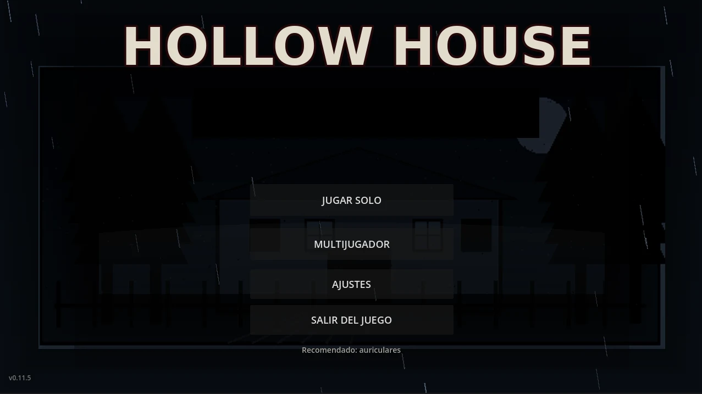

Exploración con linterna
Recorre caminos, exteriores, habitaciones, pasillos y zonas ocultas con una visibilidad limitada.

HOLLOW CREEK · JUEGO DE TERROR 2D · 2026
Entrar fue la parte fácil.
Juego indie de terror 2D desarrollado con Godot. Alex y Sebas entran en Hollow Creek buscando respuestas. Una casa aislada. Una tormenta. Un caso que nadie quiso recordar.
Hace doce años, una serie de secuestros y asesinatos sacudió a Hollow Creek. El responsable nunca fue identificado y la investigación terminó archivada.
Ahora, tres nuevas desapariciones y dos vehículos abandonados vuelven a señalar el mismo lugar: la antigua propiedad Hollow.
Alex y su amigo Sebas entran durante una noche de tormenta buscando respuestas. La salida queda bloqueada, el teléfono pierde señal y alguien comienza a seguir cada uno de sus movimientos.
Recorre caminos, exteriores, habitaciones, pasillos y zonas ocultas con una visibilidad limitada.
Reconstruye el caso Hollow, interactúa con objetos y encuentra la forma de avanzar sin saber qué te espera detrás de cada puerta.
Viví la investigación con Alex y Sebas mientras la tormenta y la casa convierten cada paso en una amenaza.
La lluvia, los silencios y los ruidos de la casa convierten cada sector en una amenaza. A veces escuchar bien puede salvarte.
“Si escuchás algo detrás de ti, quizá ya sea demasiado tarde.”
Estas imágenes fueron elegidas para mostrar mejor la atmósfera, la exploración y el inicio de la historia.




Conocé Hollow Creek, el caso Hollow, Alex y Sebas sin spoilers importantes.
Cómo se juega Hollow House: exploración, linterna, objetivos, pistas y supervivencia.
Imágenes reales del juego, la propiedad Hollow y el Hollow Creek Gazette.
Accedé a la página oficial de Hollow House en itch.io para Windows.
Cuatro desapariciones. Vehículos abandonados. Una propiedad clausurada. Años después, las coincidencias vuelven a aparecer.
LA ZONA VUELVE A ESTAR BAJO VIGILANCIA.
Disponible en itch.io. Entrá a la ficha oficial del juego, descargalo y seguí el desarrollo.
IR A ITCH.IOEnlace listo para usar.